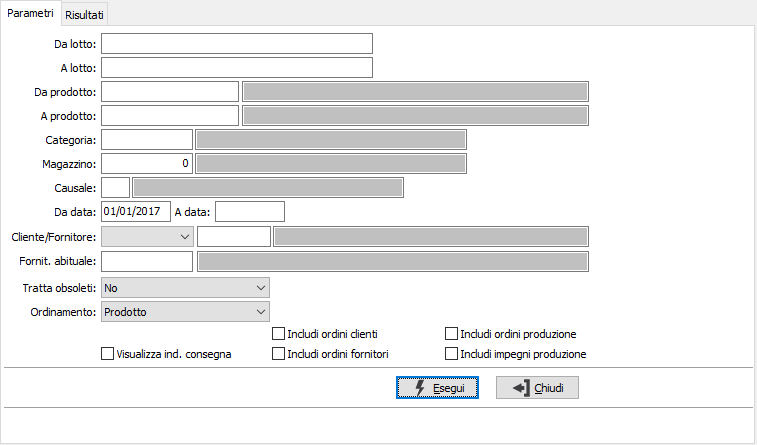
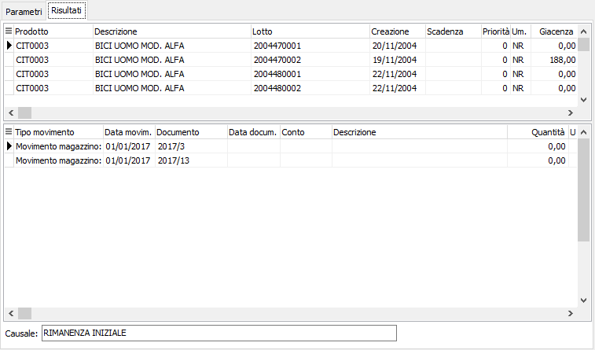

Analisi movimenti lotti
Il programma effettua la visualizzazione dei movimenti dei lotti in base ai parametri inseriti dall’utente. Una volta visualizzati i movimenti, è possibile attivare la stampa della scheda o delle schede utilizzando il bottone Stampa della tool bar.
È possibile visualizzare i movimenti relativi ad uno o più lotti, di uno o più prodotti, limitandone la selezione entro due date indicate dall’utente, ad un cliente o fornitore, ad uno specifico magazzino e/o causale.
Il programma si articola su due finestre video. La prima, Parametri, consente la definizione dei parametri di analisi.

DA LOTTO: codice del lotto, da cui si desidera iniziare la selezione di analisi. Confermando a vuoto, la selezione inizia con il primo lotto valido. Sul campo è attiva la ricerca (F9) sull’anagrafica lotti.
A LOTTO: codice del lotto con cui si desidera terminare la selezione di analisi. Confermando a vuoto, la selezione termina con l’ultimo lotto valido. Sul campo è attiva la ricerca (F9) sull’anagrafica lotti.
DA PRODOTTO: codice articolo, da cui si desidera iniziare la selezione di analisi. Confermando a vuoto, la selezione inizia con il primo prodotto valido. Sul campo è attiva la ricerca (F9) sull’anagrafica prodotti.
A PRODOTTO: codice articolo, con cui si desidera terminare la selezione di analisi. Confermando a vuoto, la selezione termina con l’ultimo valido. Sul campo è attiva la ricerca (F9) sull’anagrafica prodotti.
CATEGORIA: codice della categoria merceologica a cui si vuole restringere la selezione di analisi. Sul campo è attiva la ricerca (F9) sulla tabella Categorie merceologiche.
MAGAZZINO: codice del magazzino a cui si vuole restringere la selezione di analisi. Sul campo è attiva la ricerca (F9) sulla tabella Magazzini.
CAUSALE: codice della causale di magazzino a cui si vuole restringere la selezione di analisi. Sul campo è attiva la ricerca (F9) sulla tabella Causali di magazzino.
DA DATA: data da cui deve iniziare l’analisi per i limiti precedentemente selezionati. Confermando a vuoto, l’analisi inizia con il primo movimento valido.
A DATA: data con cui si desidera terminare l’analisi per i limiti precedentemente selezionati. Confermando a vuoto, l’analisi si conclude con l'ultimo movimento valido.
CLIENTE / FORNITORE: codice del cliente o fornitore a cui si vuole restringere la selezione di analisi. Sul campo è attiva la ricerca (F9) sull’anagrafica clienti - fornitori.
FORNITORE ABITUALE: eventuale codice del fornitore abituale dei prodotti con cui si desidera effettuare la selezione dei prodotti. Sul campo è attiva la ricerca (F9) sull’anagrafica fornitori.
TRATTA OBSOLETI: definisce come se includere nell'analisi anche gli articoli obsoleti: Si, No, Solo obsoleti.
ORDINAMENTO PER: combo box per definire i criteri di ordinamento. Valori ammessi: Per prodotto; Per data scadenza; Per priorità; Per data creazione.
VISUALIZZA INDIRIZZO CONSEGNA: se spuntato, nella pagina risultati compare un pulsante da utilizzare per la visualizzazione dei dati della destinazione di consegna merce, se presenti sul movimento.
INCLUDI ORDINI CLIENTI: check box per includere nell'analisi anche gli ordini clienti.
INCLUDI ORDINI FORNITORI: check box per includere nell'analisi anche gli ordini fornitori.
INCLUDI ORDINI A PRODUZIONE: check box per includere nell'analisi anche gli ordini relativi alla produzione (casella con segno di spunta).
INCLUDI IMPEGNI DI PRODUZIONE: check box per includere nell'analisi anche gli impegni derivanti dalla produzione (casella con segno di spunta).
Confermando tramite pressione del bottone Esegui, viene avviata la selezione e richiamata la finestra video Risultati. La finestra video è articolata su due sezioni: la sezione superiore elenca l’articolo o gli articoli con i relativi lotti selezionati, indicando per ciascuno di essi il codice, la descrizione, la scadenza e la priorità del lotto.
La sezione inferiore elenca invece i movimenti ed il tipo di documento da cui derivano, relativi all’articolo/lotto selezionato, che è quello contrassegnato dal segno freccia a destra del rigo nella sezione superiore.
Cliccando invece sui bottoni anteprima di stampa o stampa della tool bar, si avviano le relative funzioni.
